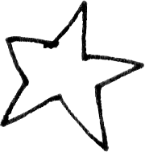
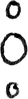
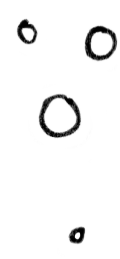
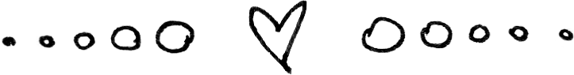

Be a flag bearer for the MCR Trans Flag!
Here’s a guide to how volunteers are considered and what to expect when bringing it to a show.
Fans closer to the show's venue are typically prioritized because it makes shipping the flag to them easier and helps ensure it arrives before they commute to the venue.
Since this project is run from the US, for international shows, we’ve had fans traveling from the US to another country meet up with a local fan and hand off the flag to them for the show, and again after to bring the flag back to the US.
Being willing to approach fans at shows, ask if they’d like to add to the flag (message, name, drawing), or be in a photo with the flag posted to social media.
You are not in a position where being sent the flag could endanger or lead to harm.
While major cities are more accepting of LGBTQ+ and gender non-conforming people, there are places where they can be more vulnerable to being out and proud. Visibility where it’s hardest is where’s it most powerful, but if you’re in a state less protective of transgender individuals and want to bring the flag, please make sure you’ll have support systems present with you. Safety in numbers!
The flag will be mailed to you prior to MCR’s show, or occasionally, given to you IRL by the previous fan who had it.
Be able to mail the flag to the next volunteer ASAP after your show to ensure it arrives in time before the concert they’re attending.
If you’re attending night one of a series of MCR concerts, you’ll be connected with the volunteer bringing it the next night to coordinate when and where to give it to them.
Redditors have asked - why make a flag to bring to concerts? It’ll block other people’s views! The main goal of the flag is to share it with the fans, not the band while they’re performing. Please refrain from obscuring others' views if you choose to hold up the flag during the concert.
Shit happens. If the flag gets damaged, confiscated by security, or is lost in the mail, etc., make sure you share that with mcrtransflag@gmail.com or @/mcrtransflag on Instagram or text Mick if he gives you his phone number.

When it comes to bringing the flag to a show, some fans may recognize it. To help people find me, I’ve found it easiest to wear the flag wrapped around me or walk around with my arms outstretched displaying the message. Then people tend to approach for a picture.
One of the best ways to get people involved is to bring it out when the crowd is waiting for the set to begin—just ask if anyone wants to sign this trans flag, leave a message, or add a drawing.
Whenever someone signs, I always check if they are comfortable being in a photo for the Instagram. While most fans are excited to participate, some may prefer not to have their faces shown online or might not be out yet, so always prioritize their privacy and ask first.
I get a lot of inquiries on Instagram from fans wanting to see the flag in-person. I’ll be directing them to the MCR Trans Flag Discord server to coordinate any meet-ups. Using a group chat setting for these arrangements is much safer, especially since we have younger volunteers and fans participating.
Right now, a few different MCR Trans Flags are circulating:
ACTIVE:
Transforming Jacket flag V1 (currently with NYX from the UK)
Transforming Jacket flag V2 (reads Awake and Unafraid)
Transforming Jacket flag V3 (reads I Am Not Afraid To Keep On Living)
RETIRED:
MCR Saves Trans Lives flag V1 (given to band's team security member)
MCR Saves Trans Lives flag V2 (gifted to Frank Iero)
MCR Saves Trans Lives flag V3 (now the creator Mick McGann's personal copy)
If you are interested in bringing the flag to a show and agree to follow the guidelines listed above, please fill out this form: